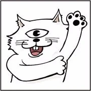

Bem-Vindo ao Mundo de "Jujutsu Kaisen"
Seja você um feiticeiro experiente ou alguém que acabou de descobrir o incrível universo de "Jujutsu Kaisen", este é o seu destino definitivo para tudo relacionado a essa saga épica! Prepare-se para mergulhar em um mundo repleto de maldições, feitiços poderosos e personagens memoráveis. "Jujutsu Kaisen," criado pelo talentoso Gege Akutami, conquistou corações em todo o mundo com sua mistura de ação emocionante, horror sobrenatural e personagens cativantes.
Sobre Gege Akutami
Gege Akutami e o Mundo de "Jujutsu Kaisen"
Gege Akutami é o brilhante mangaká por trás da série de sucesso "Jujutsu Kaisen". Com sua narrativa envolvente, personagens complexos e ilustrações impressionantes, Akutami-sensei conquistou um lugar de destaque no mundo do mangá e do anime.
A história de "Jujutsu Kaisen" segue um grupo de feiticeiros que lutam contra maldições assustadoras em uma luta desesperada pela sobrevivência da humanidade. Graças à visão única de Akutami-sensei e sua habilidade em criar um universo cativante, a série ganhou uma legião de fãs em todo o mundo.
Estúdio de Animação - MAPPA
A adaptação em anime de "Jujutsu Kaisen" é produzida pelo estúdio de animação MAPPA. O MAPPA (Maruyama Animation Produce Project Association) é conhecido por sua habilidade em criar animes de alta qualidade e envolventes. Além de "Jujutsu Kaisen", o estúdio também é responsável por outros sucessos, como "Yuri on Ice", "Dorohedoro" e "Attack on Titan: The Final Season".
O MAPPA é elogiado por sua capacidade de adaptar fielmente obras de mangá para a tela, mantendo a qualidade artística e a narrativa. Sua escolha para a produção do anime de "Jujutsu Kaisen" contribuiu significativamente para o sucesso e a popularidade da adaptação.
Personagens
Yuji Itadori
Yuji Itadori é o protagonista da história. Ele é um estudante colegial com habilidades atléticas excepcionais e um coração gentil. Após entrar em contato com um objeto amaldiçoado, sua vida muda drasticamente, levando-o a se tornar um feiticeiro amaldiçoado.
Megumi Fushiguro
Megumi Fushiguro é um colega de Yuji e um feiticeiro amaldiçoado. Ele é sério e determinado, possuindo a habilidade de invocar criaturas maldições poderosas para lutar ao seu lado. Megumi é um dos principais aliados de Yuji na luta contra as maldições.
Nobara Kugisaki
Nobara Kugisaki é uma feiticeira amaldiçoada com uma personalidade forte e determinada. Ela é especialista em combate com o uso de uma marreta amaldiçoada e é conhecida por sua habilidade implacável em lidar com maldições. Nobara se junta a Yuji e Megumi na luta contra o mal.

Satoru Gojo
Satoru Gojo é um feiticeiro incrivelmente poderoso e instrutor na Tokyo Jujutsu High. Com seu senso de humor sarcástico e habilidades únicas de jujutsu, ele é uma figura cativante e uma força a ser reconhecida no mundo das maldições.
Assista
Assista a "Jujutsu Kaisen" agora!
Não perca a ação e o suspense de "Jujutsu Kaisen". A série está disponível para transmissão online em várias plataformas de streaming. Prepare-se para uma experiência emocionante enquanto Yuji e seus amigos lutam contra maldições assustadoras e exploram o mundo sombrio dos feiticeiros amaldiçoados.